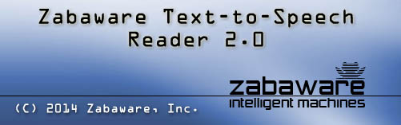
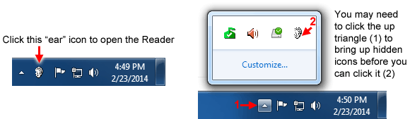
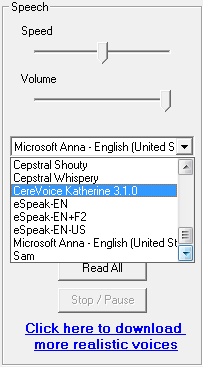

|
 The Zabaware Text-to-Speech Reader application will read your documents out loud in one of its many high quality voices. This can be a great tool for proof reading because hearing your text out loud helps you spot all mistakes. This program can also be used for reading e-books. Why strain your eyes trying to read a book from your monitor when your computer can simply read it out loud for you? This program will also read all standard Windows dialog box messages out loud to you. This can be a great aid for the visually impaired or for anyone who just wants messages to be read out loud. The Text-to-Speech reader is also able to read the clipboard contents. With this function you can easily have it read your email and web sites that you visit. Just highlight the text you want to be read and hit CTRL-C. In addition to speaking text out loud, this program is able to write audio data directly to Windows WAV files. You can convert all your documents and e-books into WAV files and then burn them to audio CDs or convert them into MP3 files. You can listen to your e-books on the road with a standard CD or MP3 player! This program has several high quality voices to choose from and gives you control over speed and volume.
The Zabaware Text-to-Speech Reader Interface By default, the Zabaware Text-to-Speech Reader starts with your computer and puts its icon in your system tray. You can start the Zabaware Text-to-Speech Reader by clicking on the "ear" icon in your system tray, as illustrated here:  The program needs to be running in order to automatically read dialog boxes and clipboard contents. If you do not plan to use any of these features and do not wish for the program to automatically start with your computer, you may simply remove its shortcut from your startup folder located in the start menu. You can always manually start the program from its own shortcut located in the start menu. Once you start the program, you will see an interface like this:
Opening and Reading a Text File The Zabaware Text-to-Speech Reader is very similar to the Windows program WordPad. It can open any text file (*.txt) or rich text file (*.rtf). This program can be used to edit, format, and save text files just like WordPad. You can change font type, size, alignment and color using the controls in the toolbar and menu bar. To open a file simply click on "File" and "Open". Find the location of the file and click "Open". This program will only open .TXT and .RTF files. If the document you wish to open is not one of these formats, you should either convert the file into a text file or simply copy and paste the text. If you wish to read the entire document, simply click on the "Read All" document. If you wish to read only part of the document, first make a selection of the text by holding down the left mouse button and dragging your mouse over the text. After it is selected (highlighted) you may push the "Read Selection" button to read just that part. If at anytime you wish to stop or pause the speech you may push the "Stop" button. If you wish to resume the speech, simply click the "Read Selection" button as the program automatically selects the remaining text whenever you push "Stop".
Choosing and Configuring a Voice The Zabaware Text-to-Speech Reader is compatible with any SAPI 4 or SAPI 5 compliant speech synthesizer. This program includes several free generic voices. Zabaware also sells many high quality realistic/natural-sounding from various vendors in our webstore. It is possible you may have other compatible voices installed from other vendors as well. To select a voice, simply click on the drop down list located on the right hand side of the interface and click on a different voice:  Once you choose a voice, you may change its speed and volume using the 2 slider controls shown above. Some (but not all) voices also have advanced speech and pronunciation settings available. To change pronunciation settings, click on "Options" in the menu bar and then "Pronunciation Settings for Current Voice" To change advanced voice settings, click on "Options" in the menu bar and then "Advanced Speech Options for the Current Voice"
Using the Clipboard for Reading Internet Pages and Email The clipboard function of the Zabaware Text-to-Speech Reader automatically monitors your clipboard for text changes. Every time you copy some text into the clipboard, this program will automatically read it out loud. This can be great for reading internet pages out loud and email messages. First, make sure this option is turned on. If it is not, simply click on "Options" in the menu bar and put a checkmark by the option that says "Read Clipboard When Text is Copied" Now, lets say you are browsing an Internet page and you would like the program to read it outloud. Simply select (highlight) the text you would like to be spoken by holding the left button down and dragging the mouse over the text. After you selected the text you can copy it by pressing CTRL-C or by clicking on "Edit" and "Copy" As soon as you do this, the Zabaware Text-to-Speech Reader will automatically start speaking this text. You can use this method to make every program speak!
Automatically Reading Standard Windows Dialogs The Zabaware Text-to-Speech Reader program is able to automatically read out loud all standard windows dialogs that pop up. For example if you try closing a document without saving it first, it will pop up a dialog asking whether you wish to save it or not. The Zabaware Text-to-Speech Reader will automatically read this dialog and all other standard dialogs out loud. If you wish to use this function make sure this option is turned on. If it is not, simply click on "Options" in the menu bar and put a checkmark by the option that says "Read Text From All Dialog Boxes"
Converting a Document into WAV Audio File The Zabaware Text-to-Speech Reader program is able to both speak documents out loud and convert them into Windows PCM WAVE (.WAV) files. It will create a 16-bit 22kHz mono wave file, as this is what most speech synthesizers actually output. To convert text into a WAVE file first open the document so that it appears inside the application. Next click on "File" from the menu bar and click on "Convert Text into WAV audio file" The program will ask you where to save your WAV file. Give it a location and click "Save". Next the program will ask you what voice you would like it to use. Choose a voice from the list and click "OK" The program will then convert the text into an audio file. It will give you a time estimate of the process and show you its progress. After its done you will have a WAVE file that you can listen to, burn to audio CD, or convert to MP3!
Visit Zabaware's website at www.zabaware.com to get more help. Read our online pages or post questions to our forums and check out our other cool software.
|